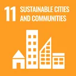
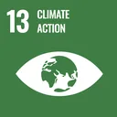
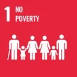
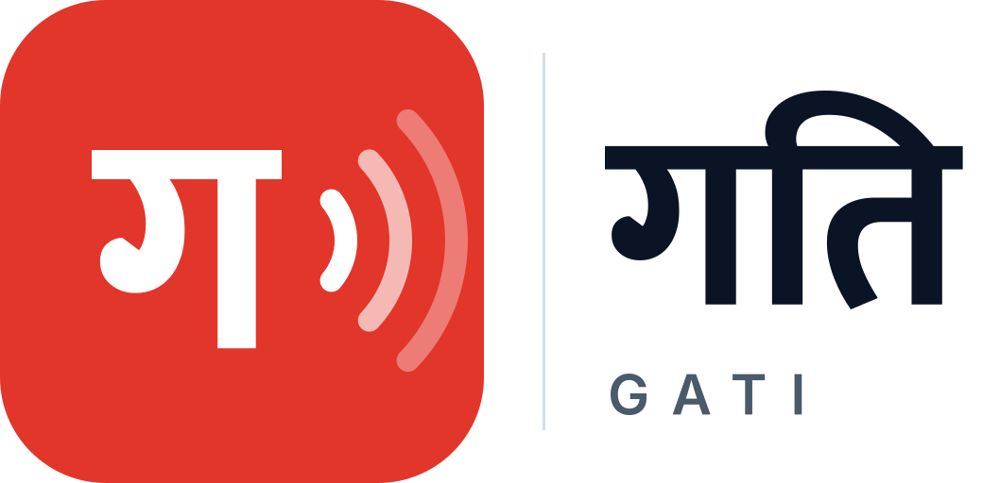
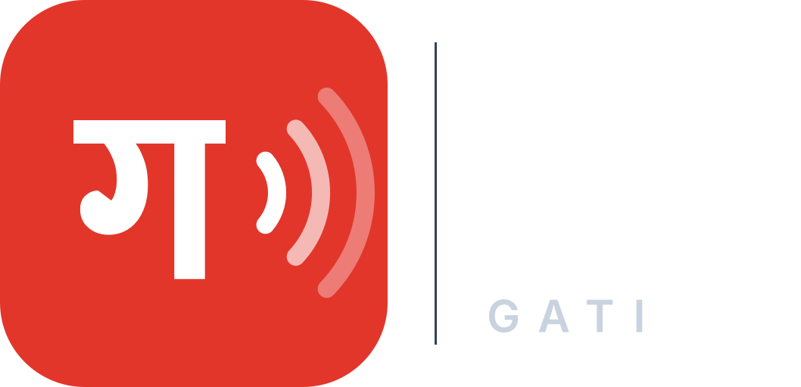

गतिको बारेमाAbout Gati
गति नेपालीमै पहिले आउने सार्वजनिक सूचना सेवा हो। बाढी, पहिरो, सडक बन्द, मौसमजस्ता सबै खतराका सरकारी चेतावनी र सूचना यसले एउटै ढाँचा (CAP 1.2) मा राखेर स्रोतसहित छिटो हजुरसम्म पुर्याउँछ। नागरिकले पठाएका रिपोर्ट पनि खुला तरिकाले जाँच्छ। Gati (गति, "speed") is a Nepali-first, multi-hazard public alert project. It puts official warnings and notices from government agencies into one standard format (CAP 1.2), delivers them fast with their source, and checks citizen reports through a clear process.
कानुनी स्थितिLegal position
विपद् जोखिम न्यूनीकरण तथा व्यवस्थापन ऐन, २०७४ अनुसार पूर्वसूचना र चेतावनी दिने काम तोकिएका निकाय (जस्तै DHM, NDRRMA, स्थानीय प्रशासन) को हो। गतिले कुनै आधिकारिक चेतावनी जारी गर्दैन। यसले ती निकायकै सूचना मूल स्रोत, समय र भरोसा चिह्नसहित फैलाउने र जाँच्ने काम मात्र गर्छ। हरेक CAP सन्देशमा sender मूल निकाय नै हो; गतिको नाम "सूचना फैलाउने" भनेर note मा मात्र लेखिन्छ। गति कुनै सरकारी निकायको आधिकारिक प्रणाली होइन।
Under the Disaster Risk Reduction and Management Act 2074 (2017), issuing early warnings is the job of the mandated agencies (such as DHM, NDRRMA and local administration). Gati never issues official warnings. It only relays and verifies their notices with the original source, time and a trust label. In every CAP message the sender is the original agency; Gati appears only as the relay in note. Gati is not an official system of any government agency.
मान्यता र उल्लेखRecognition
★ GitHub Octoverse २०२६ मा उल्लेखFeatured in GitHub Octoverse 2026
GitHub को वार्षिक प्रतिवेदन Octoverse २०२६ (२०२६ अक्टोबर २८) को सुरुकै अनुच्छेदमा, समुदायलाई चाहिएको कुरा बनाउने विकासकर्ताको उदाहरणका रूपमा, गति र यसको सुरुवात भएको रसुवा–भोटेकोशी बाढी बुलेटिन उल्लेख गरिएको छ।GitHub's annual report, Octoverse 2026 (28 October 2026), names Gati and the Rasuwa–Bhotekoshi flood bulletin it grew from in its opening paragraph, as an example of developers building what their communities need.
“In Nepal, one developer built a flood bulletin on GitHub Pages with verified information on roads, rescue, weather, and power. It has since grown into Gati, a Nepali-first relay of official disaster alerts that runs on GitHub Pages and Actions.”
गति एक नजरमाGati at a glance
| के होWhat it is | नेपालका आधिकारिक विपद् सूचना, स्रोत र समयसहित, एकै ठाउँमा पुर्याउने स्वतन्त्र नागरिक परियोजना।An independent citizen project that relays Nepal's official disaster notices in one place, each with its source and time. |
|---|---|
| के होइनWhat it is not | सरकारी प्रणाली, चेतावनी जारी गर्ने निकाय वा आपत्कालीन सेवा होइन।Not a government system, not a warning authority, and not an emergency service. |
| सुरुवातOrigin | रसुवा–भोटेकोशी बाढी, सडक र मौसम बुलेटिनबाट। त्यहीँको प्रमाणित डेटाबाट गतिका पहिला सूचना बनेका हुन्।Grew out of the Rasuwa–Bhotekoshi flood, road and weather bulletin, whose verified data seeded the first alerts. |
| स्रोतSources | DHM, NDRRMA, NEOC, नेपाल प्रहरी, BIPAD, सडक विभाग, राष्ट्रिय भूकम्प मापन केन्द्र लगायत ११ सक्रिय आधिकारिक स्रोत। पूरा सूची स्रोत पेजमा।11 active official sources, including DHM, NDRRMA, NEOC, Nepal Police, BIPAD, the Department of Roads and the National Earthquake Monitoring and Research Center. Full list on the Sources page. |
| के के छWhat it covers | सूचना, नक्सा, नदी, सडक, मौसम र हावा, भूकम्प, के म प्रभावित छु?, मार्ग जाँच, पदमार्ग, आपतकालीन नम्बर, के गर्ने, पात्रो।Alerts, map, rivers, roads, weather and air, earthquakes, Am I affected?, route check, trekking, emergency numbers, what to do and the Patro calendar. |
| भाषाLanguages | नेपाली पहिले, अङ्ग्रेजी पनि। आधिकारिक सूचनाको शब्द कहिल्यै फेरिँदैन।Nepali first, with English. The wording of official notices is never changed. |
| मापदण्डStandards | CAP 1.2 (OASIS, ITU-T X.1303), Atom र JSON। खुला डेटा लिन खाता चाहिँदैन।CAP 1.2 (OASIS, ITU-T X.1303), Atom and JSON. The open data needs no account. |
| कसरी चल्छHow it runs | GitHub Pages मा स्थिर साइट र GitHub Actions। ढिलो फोनमा र इन्टरनेट नहुँदा पनि चल्ने गरी बनाइएको; फोनमा एपजस्तै राख्न मिल्छ।A static site on GitHub Pages with GitHub Actions. Built to work on slow phones and without internet; it can be installed like an app. |
| गोपनीयताPrivacy | खाता, कुकी, विज्ञापन वा एनालिटिक्स छैन। गोपनीयता नीति।No accounts, cookies, ads or analytics. Privacy policy. |
| इजाजतपत्रLicence | कोड MIT, गतिको आफ्नै सामग्री र डेटा CC BY 4.0। आधिकारिक सूचना सम्बन्धित निकायकै हुन्।Code under MIT; Gati's own content and data under CC BY 4.0. Official notices remain the agencies' own. |
| खर्च र सञ्चालनFunding | स्वयंसेवक निरज भुसालले चलाएको। विज्ञापन वा प्रायोजक छैन।Run by a volunteer, Niraj Bhusal. No advertising and no sponsors. |
गति कसले बनायोWho makes Gati
गति निरज भुसालले बनाएको र चलाएको स्वतन्त्र नागरिक परियोजना हो। यो कुनै सरकारी निकाय, संस्था वा कम्पनीको तर्फबाट चलाइएको होइन।Gati is built and maintained by Niraj Bhusal as an independent citizen project. It is not run on behalf of any government agency, organisation or company.


गति के होWhat Gati is
- आधिकारिक निकायका चेतावनी र सूचना एकै ठाउँमा फैलाउने सेवा; आफैँ कहिल्यै चेतावनी जारी गर्दैन।
- हरेक सूचनामा मूल स्रोतको लिङ्क र स्रोतको समय हुन्छ।
- नेपाली पहिले, अङ्ग्रेजी दोस्रो; कम ब्यान्डविथका लागि Lite पृष्ठ र अफलाइनमा पछिल्लो प्रति।
- स्वतन्त्र, खुला स्रोतको परियोजना; कुनै सरकारी वा संयुक्त राष्ट्रसंघीय निकायको आधिकारिक प्रणाली होइन।
- A service that relays official warnings and notices in one place; it never issues a warning itself.
- Every item carries the original source link and the source time.
- Nepali first, English second; a Lite page for low bandwidth and the last copy offline.
- An independent, open-source project; not an official system of any government or UN body.
गति कसरी बनेको छ: पाँच तहHow Gati works: five layers
- स्रोत: तोकिएका सरकारी निकाय (DHM, NDRRMA, NEOC, नेपाल प्रहरी, NSC) का सार्वजनिक सूचना। नेपालको आधिकारिक मौसम चेतावनी DHM कै हो। विश्व स्रोत पूरक मात्र हुन्, सूची स्रोत पृष्ठमा छ।
- सङ्कलन: स्क्रिप्टले स्रोत नियमित रूपमा जाँच्छन्, कच्चा प्रति सुरक्षित राख्छन्, र बदलिएमा मात्र नयाँ प्रति थप्छन्।
- मानकीकरण: हरेक सूचना नेपाली र अङ्ग्रेजीमा CAP 1.2 सन्देश बन्छ, मूल निकाय
senderमै रहन्छ, स्रोत लिङ्क, स्रोतको समय र भरोसा चिह्नसहित; XSD र गतिको नियमले जाँचिन्छ। फरक निकायका तथ्याङ्क जोडिँदैनन्। - प्रकाशन: स्थिर साइट, Atom/CAP फिड, JSON, स्थायी लिङ्क, सेयर र सूचना फिडका तस्बिर, Lite पृष्ठ र पात्रो (.ics)। म्याद सकिएका सूचना अभिलेखमै रहन्छन्।
- सहभागिता: सूचना फिड, पात्रो, मेरो जिल्ला, सेयर बटन, इम्बेड, नागरिक रिपोर्ट (पुष्टि नभएसम्म "रिपोर्ट गरिएको") र आउँदै गरेको "सोध्नुहोस्"।
- Sources: public notices from the mandated agencies (DHM, NDRRMA, NEOC, Nepal Police, NSC). DHM is Nepal's only official weather warning voice. Global sources are supplementary only; the list is on the Sources page.
- Ingest: scripts poll each source on a schedule, keep raw snapshots and commit only when something changed.
- Normalise: every notice becomes a CAP 1.2 message in Nepali and English, with the original agency as
sender, the source link, source time and a trust label, validated against the XSD and the Gati profile. Counts from different agencies are never added together. - Publish: a static site, Atom/CAP feeds, JSON, permalinks, share and feed images, the Lite page and the Patro (.ics). Expired notices stay in the archive.
- Engage: Feed, Patro, My district, share buttons, the embed widget, citizen reports (shown as Reported until checked) and the coming Ask page.
गलत सूचना: एक जोखिमMisinformation as a risk
विश्व आर्थिक मञ्च (World Economic Forum) को Global Risks Report २०२६ (जनवरी १४, २०२६ मा प्रकाशित) ले आगामी दुई वर्षको जोखिम सूचीमा "Misinformation and disinformation" (गलत सूचना र भ्रामक सूचना) लाई दोस्रो स्थानमा राखेको छ; पहिलो भू-आर्थिक टकराव (Geoeconomic confrontation) छ। प्रतिवेदनको शब्दमा: "Misinformation and disinformation and Cyber insecurity ranked #2 and #6, respectively, on the two-year outlook." यसअघि २०२५ र २०२४ को संस्करणमा यो छोटो अवधिको पहिलो नम्बरको जोखिम थियो।The World Economic Forum's Global Risks Report 2026 (published 14 Jan 2026) ranks "Misinformation and disinformation" second on its two-year outlook, after Geoeconomic confrontation. In the report's words: "Misinformation and disinformation and Cyber insecurity ranked #2 and #6, respectively, on the two-year outlook." In the 2025 and 2024 editions it was the top short-term risk.
विपद्को बेला गलत सूचनाले मानिसलाई गलत ठाउँमा पठाउन, आवश्यक चेतावनी बेवास्ता गराउन वा अनावश्यक त्रास फैलाउन सक्छ। गतिको काम यसको विपरीत हो:In a disaster, false information can send people the wrong way, make them ignore a real warning, or spread needless panic. Gati works against this:
- आधिकारिक स्रोतको सूचना प्रसारण गर्छ, हरेकमा मूल लिङ्क र स्रोतको समय।Relays what official sources say, each item with its original link and source time.
- हरेक सूचनामा भरोसा चिह्न: आधिकारिक, प्रमाणित वा रिपोर्ट गरिएको।Puts a trust label on every item: Official, Verified or Reported.
- आधिकारिक पुष्टि नभएका सूचनालाई "रिपोर्ट गरिएको" भनी स्पष्ट छुट्याउँछ।Clearly marks items that are reported only, not officially confirmed.
- आफैँ चेतावनी जारी गर्दैन; चेतावनी जारी गर्ने अधिकार सरकारी निकायको हो।Never issues warnings itself; that is the role of government agencies.
- पुराना सूचना मेटिँदैनन्, अभिलेखमा रहन्छन्, ताकि के कहिले भनिएको थियो जाँच्न सकियोस्।Archives old items instead of deleting them, so anyone can check what was said and when.
शङ्का लागेमा मूल स्रोत खोल्नुहोस्, वा प्रहरी १०० र विपद् १२३४ मा फोन गर्नुहोस्।When in doubt, open the original source, or call Police 100 or Disaster 1234.
कसका लागिWho it serves
- नेपालका बासिन्दा, जसलाई आफ्नो जिल्लाको चालु चेतावनी छिटो चाहिन्छ।
- यात्री र पदयात्री, जसलाई सडक, मौसम र पदमार्गको अवस्था चाहिन्छ।
- स्थानीय तह, संस्था र पत्रकार, जसले स्रोतसहितका सूचना आफ्नै पृष्ठ वा समाचारमा राख्न चाहन्छन्।
- विदेशमा रहेका परिवार, जसले घरको जिल्लाको अवस्था हेर्न चाहन्छन्।
- People in Nepal who need active warnings for their district, fast.
- Travellers and trekkers who need road, weather and trail conditions.
- Local governments, organisations and journalists who want sourced notices on their own pages or stories.
- Families abroad who want to check on their home district.
भरोसा चिह्नTrust labels
| 🛡 आधिकारिकOfficial | जिम्मेवार सरकारी निकायले नै जारी गरेको; मूल लिङ्कसहित।Issued by a mandated government agency; original link attached. |
| ✓ प्रमाणितVerified | दुई वा बढी छुट्टाछुट्टै स्रोत, नापी केन्द्र वा सरकारी पुष्टिसँग मिलाएर मोडेरेटरले जाँचेको।Checked by a moderator against 2+ independent reports, a sensor/gauge, or official confirmation. |
| ❝ रिपोर्ट गरिएकोReported | कुनै नागरिक वा एउटा समाचार माध्यमले भनेको; अझै पुष्टि भएको छैन।Said by a citizen or one outlet; not confirmed. |
| ◌ पुष्टि नभएकोUnverified | भित्री काम: जाँच्न बाँकी वा जानकारी नपुगेको; सार्वजनिक सूचीमा देखाइँदैन।Internal: pending or not enough information; not shown in public lists. |
| ✎ सच्याइएकोCorrected | पछि आएको सूचनाले विवरण बदलेको; के सच्याइयो, खुलै देखाइन्छ।Later information changed the details; the correction is shown openly. |
| ✕ फिर्ता लिइएकोRetracted | गलत वा भ्रम पार्ने ठहरिएको; मेटिँदैन, फिर्ता लिइएको भनी प्रस्ट देखाइन्छ।Found false or misleading; kept, but clearly marked as withdrawn. |
| 🧮 मोडेलModel | मोडेल डेटा, आधिकारिक चेतावनी होइन।Model data, not an official warning. |
खतराको तहSeverity scale
⬢ अत्यन्त गम्भीरExtreme ▲ गम्भीरSevere ◆ मध्यमModerate ● सामान्यMinor ℹ सूचनाInfo
हाम्रा नियमEditorial rules
- जाँचिएका सूचना मात्र, मूल स्रोत र समयसहित।
- लेख, तालिका र नक्सा मात्र, स्क्रिनसट होइन।
- फरक निकायका तथ्याङ्क कहिल्यै जोडिँदैनन्।
- म्याद सकिएका सूचना मेटिँदैनन्; "म्याद सकियो" लेखेर पुरानो सूचीमा राखिन्छन्।
- Verified information only, with original source and time.
- Text, tables and maps only, no screenshots.
- Counts from different agencies are never added together.
- Expired notices stay in the archive, marked "Expired".
दिगो विकास लक्ष्यसँग तालमेलAlignment with the Sustainable Development Goals

मुख्य: SDG ११Primary: SDG 11
लक्ष्य ११.५: विपद्बाट हुने मृत्यु, प्रभावित मानिसको सङ्ख्या र आर्थिक क्षति घटाउने।Target 11.5: reduce disaster deaths, the number of people affected and economic losses.
SDG १३SDG 13
१३.१ जलवायुजन्य प्रकोपसँग जुध्ने क्षमता; १३.३ पूर्वचेतावनी र सचेतना।13.1 resilience to climate hazards; 13.3 early warning and awareness.
SDG १SDG 1
१.५ गरिब र जोखिममा रहेका मानिसको उत्थानशीलता।1.5 resilience of the poor and vulnerable.- SDG ९SDG 9
९.ग सूचना तथा सञ्चार प्रविधिमा पहुँच।9.c access to information and communication technology. - SDG १६SDG 16
१६.१० सूचनामा सर्वसाधारणको पहुँच।16.10 public access to information.
Early Warnings for All
संयुक्त राष्ट्रसंघको "सबैका लागि पूर्वचेतावनी" (EW4All) पहलको लक्ष्य सन् २०२७ भित्र पृथ्वीका हरेक मानिसलाई पूर्वचेतावनी प्रणालीले सुरक्षित बनाउनु हो। WMO र UNDRR यसको नेतृत्व गर्छन्। गति यो पहलको साझेदार होइन; यसले नेपालका आधिकारिक चेतावनी मानिससम्म पुर्याउने काममा मात्र योगदान दिन खोज्छ।The UN's Early Warnings for All (EW4All) initiative aims for everyone on Earth to be protected by early warning systems by 2027, led by WMO and UNDRR. Gati is not a partner of the initiative; it only aims to help Nepal's official warnings reach people.
EW4All का चार स्तम्भ र गतिThe four EW4All pillars and Gati
| १. विपद् जोखिमको ज्ञान1. Disaster risk knowledge | आधिकारिक निकायको काम। गतिले उनीहरूको सार्वजनिक जोखिम जानकारीतर्फ लिङ्क मात्र दिन्छ।The agencies' work. Gati only links to their public risk information. |
| २. अनुगमन र पूर्वानुमान2. Detection, observation, monitoring, analysis and forecasting | DHM जस्ता निकायको काम। गतिले उनीहरूका नदी, मौसम र भूकम्पका तथ्याङ्क स्रोतसहित देखाउँछ, आफ्नै पूर्वानुमान गर्दैन।Done by agencies such as DHM. Gati shows their river, weather and earthquake data with the source; it makes no forecasts of its own. |
| ३. चेतावनी प्रसार र सञ्चार3. Warning dissemination and communication | गतिको मुख्य योगदान यहीँ हो। CAP फिड, नेपाली पहिले, Lite पृष्ठ, अफलाइन प्रति, पात्रो, सेयर र इम्बेडमार्फत आधिकारिक चेतावनी धेरै मानिससम्म पुर्याउने।This is where Gati mainly contributes. Getting official warnings to more people through CAP feeds, Nepali first, the Lite page, offline copies, the Patro, sharing and the embed widget. |
| ४. तयारी र प्रतिक्रिया क्षमता4. Preparedness and response capabilities | सरकार र समुदायको काम। गतिले सुरक्षा सुझाव र आपत्कालीन सम्पर्क नम्बर मात्र सँगै राख्छ।The work of government and communities. Gati only keeps safety tips and emergency contacts alongside. |
सेन्डाइ ढाँचा: लक्ष्य GSendai Framework: Target G
सेन्डाइ ढाँचा २०१५-२०३० को लक्ष्य G ले सन् २०३० सम्म बहुप्रकोप पूर्वचेतावनी प्रणाली र विपद् जोखिम सूचनामा मानिसको पहुँच उल्लेख्य रूपमा बढाउन भन्छ। गतिले यही "पहुँच" पक्षमा, आधिकारिक सूचना सजिलै पाउने बनाएर, सघाउन खोज्छ।Target G of the Sendai Framework 2015-2030 asks to substantially increase the availability of and access to multi-hazard early warning systems and disaster risk information by 2030. Gati aims to help with the access part, by making official notices easier to reach.
विपद् जोखिम न्यूनीकरण तथा व्यवस्थापन ऐन, २०७४Disaster Risk Reduction and Management Act 2074
यो ऐनले NDRRMA र तोकिएका निकायलाई पूर्वसूचना दिने जिम्मा दिएको छ। त्यसैले गति आधिकारिक च्यानलको विकल्प होइन, पूरक मात्र हो। माथिको "कानुनी स्थिति" हेर्नुहोस्।The Act gives NDRRMA and the mandated agencies the duty of early warning. So Gati is a complement to official channels, not a replacement. See "Legal position" above.
गति रसुवा–भोटेकोशी बाढी, सडक र मौसम बुलेटिन कै अर्को चरण हो। अहिलेका सूचना त्यही बुलेटिनको जाँचिएको डेटाबाट लिइएका हुन्। Gati is the next step after the Rasuwa–Bhotekoshi flood, road and weather bulletin. The current items come from that bulletin's verified data.
रसुवा भोटेकोशी बाढी अपडेट / Rasuwa Bhotekoshi Flood Update ↗
ब्रान्ड किटBrand kit
गतिको बारेमा लेख्दा, देखाउँदा वा लिङ्क गर्दा यी नियम पालना गर्नुहोस्। उद्देश्य एउटै हो: मान्छेले गतिलाई सजिलै चिनून्, र यसलाई सरकारी निकायसँग नझुक्किऊन्।Follow these when you write about, show or link to Gati. The aim is simple: people should recognise Gati easily and never mistake it for a government agency.
ब्रान्ड किट हेर्नुहोस्: नाम, लोगो, रङ, अक्षर र नियमOpen the brand kit: name, logo, colours, type and rules
नाम र नाराName and tagline
- नाम: गति। अङ्ग्रेजीमा Gati (ठूलो G मात्र)। दुवै सँगै लेख्दा नेपाली पहिले: गति Gati।
- अर्थ: चाल, वेग। सही सूचना छिटो पुगोस् भन्ने भाव।
- नारा: सही सूचना, सही समयमा ।
- छोटो परिचय: “नेपालका आधिकारिक विपद् सूचना, स्रोत र समयसहित, फैलाउने स्वतन्त्र नागरिक परियोजना।”
- “गतिले चेतावनी दियो” नलेख्नुहोस्। “DHM को चेतावनी, गति मार्फत” लेख्नुहोस्।
- Name: गति. In English, Gati (capital G only, never GATI in running text). Together, Nepali comes first: गति Gati.
- Meaning: speed, motion. The right information should arrive fast.
- Tagline: The right alert, right on time.
- Short description: “An independent citizen project that relays Nepal's official disaster alerts, with source and time.”
- Never write “Gati warned”. Write “DHM's warning, relayed by Gati”.
लोगोLogo
चिह्न: रातो गोलाकार वर्गभित्र सेतो “ग” र दायाँतिर फैलिँदै गएका तीन सङ्केत-रेखा। “ग” गतिको पहिलो अक्षर हो; रेखाले सूचना फैलिएको जनाउँछन्।The mark: a white “ग” on a red rounded square with three signal arcs spreading to the right. “ग” is the first letter of गति; the arcs stand for a message being relayed.


डाउनलोडDownloads
सबै फाइल निःशुल्क डाउनलोड गर्न सकिन्छ। लोगो SVG (भेक्टर) र PNG दुवैमा छन्।Every file is free to download. Logos come as SVG (vector) and PNG.
पूरा ब्रान्ड किट (ZIP)Full brand kit (ZIP) 1.9 MBसामाजिक सञ्जाल किट (ZIP)Social media kit (ZIP) 1.6 MBब्रान्ड निर्देशिका (PDF)Brand guidelines (PDF) 258 KB
फाइल एक-एक गरी लिनुहोस्Get the files one by one


- खाली ठाउँ: लोगोको चारैतिर चिह्नको उचाइको कम्तीमा एक चौथाइ खाली राख्नुहोस्।
- सानोमा सानो आकार: चिह्न २४ px, तेर्सो लोगो ९६ px चौडा। त्योभन्दा सानो ठाउँमा चिह्न मात्र प्रयोग गर्नुहोस्।
- पृष्ठभूमि: उज्यालोमा
gati-logo-horizontal, अँध्यारोमाgati-logo-horizontal-white। तस्विर वा भिडभाड भएको पृष्ठभूमिमाथि नराख्नुहोस्।
- Clear space: keep at least a quarter of the mark's height empty on every side.
- Minimum size: mark 24 px; horizontal logo 96 px wide. Below that, use the mark alone.
- Backgrounds:
gati-logo-horizontalon light,gati-logo-horizontal-whiteon dark. Do not place it over photos or busy backgrounds.
रङColour
अक्षरTypography
- Mukta: देवनागरी पाठ र शीर्षक।
- Inter: अङ्ग्रेजी पाठ र अङ्क।
- दुवै खुला इजाजतपत्र (SIL OFL) का फन्ट हुन् र यही साइटबाट आउँछन्।
- अङ्क भाषासँगै बदलिन्छन्: नेपालीमा ०१२३, अङ्ग्रेजीमा 0123।
- Mukta: Devanagari text and headings.
- Inter: Latin text and numerals.
- Both are open fonts (SIL OFL) and are served from this site.
- Numerals follow the language: ०१२३ in Nepali, 0123 in English.
बोली र लेखाइVoice and writing
- नेपाली पहिले। पाठकलाई “हजुर” भनेर सम्बोधन गर्नुहोस्।
- छोटा वाक्य, सरल शब्द। डर बढाउने वा सनसनीपूर्ण शब्द नराख्नुहोस्।
- हरेक सूचनामा स्रोत र स्रोतको समय अनिवार्य।
- आधिकारिक सूचनाको शब्द नफेर्नुहोस्; सारांश हो भने “सारांश, शब्दशः होइन” लेख्नुहोस्।
- फरक निकायका सङ्ख्या कहिल्यै नजोड्नुहोस्।
- भरोसा चिह्न (आधिकारिक, प्रमाणित, रिपोर्ट गरिएको) र खतराको तह सधैँ छुट्टाछुट्टै देखाउनुहोस्।
- Nepali first. Address the reader respectfully (हजुर).
- Short sentences and plain words. No alarming or sensational wording.
- Every item carries its source and the source time.
- Do not reword an official notice; when summarising, label it as a summary.
- Never add together figures from different agencies.
- Show the trust label (Official, Verified, Reported) and the severity separately, always.
एप र वेब आइकनApp and web icons
- एप आइकन: गति रातो पृष्ठभूमिमा सेतो चिह्न (१९२ र ५१२ px, र किनारा काटिँदा पनि नबिग्रने maskable संस्करण)।
- वेब आइकन (favicon): ३२ र ६४ px; सानो आकारमा “ग” मात्र।
- थिम रङ
#0B1424, एप खुल्दाको पृष्ठभूमि#F7F9FB। - सेयर तस्विर:
share-cover-1200x630.png(१२००×६३०)।
- App icon: white mark on Gati Red (192 and 512 px, plus a maskable version that survives cropping).
- Web icon (favicon): 32 and 64 px; at small sizes, the “ग” alone.
- Theme colour
#0B1424; app launch background#F7F9FB. - Share image:
share-cover-1200x630.png(1200×630).
गर्ने र नगर्नेDo and don't
- गतिबारे समाचार, लेख वा प्रस्तुतिमा लोगो जस्ताको तस्तै प्रयोग गर्ने।
- गतिको सूचना देखाउँदा मूल निकायको नाम र लिङ्क पनि देखाउने।
- गतिको साइट वा सम्बन्धित सूचनामा लिङ्क गर्ने।
- Use the logo unchanged in news, articles and talks about Gati.
- When showing a Gati alert, also show the original agency's name and link.
- Link to the Gati site or to the specific alert.
- लोगोको रङ फेर्ने, तन्काउने, घुमाउने, छाया वा प्रभाव थप्ने।
- सरकारी निसान छाप वा निकायका लोगोसँग जोडेर राख्ने, वा गतिलाई सरकारी भनेर देखाउने।
- गतिले कसैलाई समर्थन वा प्रायोजन गरेको जस्तो देखाउने।
- आफ्नो फोर्क वा अर्को सेवामा गतिको नाम र लोगो प्रयोग गर्ने; आफ्नै नाम र लोगो राख्नुहोस्।
- Recolour, stretch, rotate, or add shadows or effects to the logo.
- Combine it with a government emblem or agency logo, or present Gati as official.
- Suggest that Gati endorses or sponsors anyone.
- Use the Gati name and logo on a fork or another service; use your own name and logo.
गोपनीयता र डेटाPrivacy and data
- खाता चाहिँदैन। गतिमा विज्ञापन वा एनालिटिक्स स्क्रिप्ट छैन।
- भाषा, थिम, जिल्ला र निगरानी सूचीजस्ता रोजाइ हजुरकै ब्राउजर (localStorage) मा मात्र रहन्छन्।
- केही पृष्ठले खुला सार्वजनिक सेवा (जस्तै Open-Meteo, नक्सा टाइल) बाट डेटा ल्याउँछन्; ती सेवाले सामान्य वेब अनुरोधजस्तै हजुरको IP ठेगाना देख्न सक्छन्।
- नागरिक रिपोर्टले हजुरले लेखेको कुरा मात्र राखेर GitHub मा सार्वजनिक issue (वा इमेल) खोल्छ; हजुरले नपठाएसम्म केही जाँदैन। पुष्टि नभएसम्म "रिपोर्ट गरिएको" देखिन्छ।
- No account needed. Gati has no ads and no analytics scripts.
- Choices such as language, theme, district and watchlist stay in your own browser (localStorage).
- Some pages load data from open public services (such as Open-Meteo and map tiles); like any web request, those services can see your IP address.
- A citizen report opens a public GitHub issue (or an email) containing only what you write; nothing is sent until you submit it. It shows as Reported until checked.
पूरा गोपनीयता नीति →Full privacy policy →
खुला र पुनःप्रयोगयोग्यOpen and reusable
स्रोत कोड GitHub मा खुला छ। सूचना CAP, Atom र JSON मा API पृष्ठबाट लिन सकिन्छ, र तलको इम्बेड बाकस कुनै पनि वेबसाइटमा राख्न सकिन्छ।The source code is open on GitHub. Notices are available as CAP, Atom and JSON from the API page, and the embed box below works on any website.
आफ्नो वेबसाइटमा गति राख्नुहोस्Put Gati on your website
नगरपालिका र संस्थाले यो ३०० px बाकस टाँस्न सक्छन्। यसले हजुरको जिल्लाका चालु आधिकारिक सूचना मात्र, मूल स्रोत र समयसहित देखाउँछ। district मा जिल्लाको नाम (जस्तै gorkha) र lang मा ne वा en राख्नुहोस्।Municipalities and organisations can paste this 300 px box. It shows only active official alerts for the district, with original source and time. Set district to a district name (for example gorkha) and lang to ne or en.
<iframe src="https://nirajbhusal.github.io/gati-alerts/embed/?district=gorkha&lang=ne" width="300" height="420" style="border:0" title="गति Gati: चालु आधिकारिक सूचना" loading="lazy"></iframe>